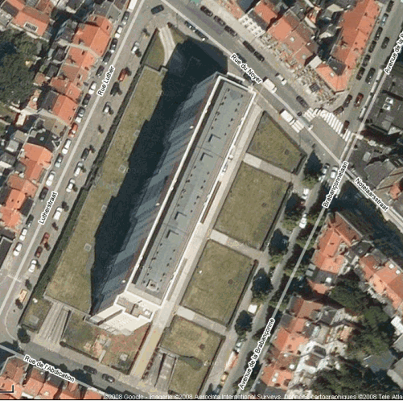

Assemblée Générale - Procès-verbaux
(
*
)
= Convocation à la demande de plus de 20% des copropriétaires
(
**
)
= Convocation par le Président de l'Assemblée générale du 30.04.2013
Assemblées Générales statutaires des 12.03.2009 et 31.03.2009
Assemblées Générales statutaires des 09.03.2010 et 04.05.2010
Assemblées Générales statutaires des 29.03.2011 et 28.04.2011
Assemblée Générale partielle du Bloc B du 08.12.2011
(
*
)
Assemblée Générale statutaire du 27.03.2012
Assemblées Générales statutaires des 28.03.2013 et 30.04.2013
Assemblée Générale extraordinaire du 29.07.2013 (
**
) : choix du syndic (pour un contrat de 2 mois) -
résultat du vote
Assemblée Générale extraordinaire du 10.09.2013
Assemblée Générale statutaire du 27.02.2014
Assemblées Générales extraordinaires des 07.10.2014 et 20.11.2014
Assemblée Générale statutaire du 24.03.2015
Assemblée Générale statutaire du 03.03.2016
Assemblées Générales extraordinaires des 03.10.2016 et 24.10.2016
